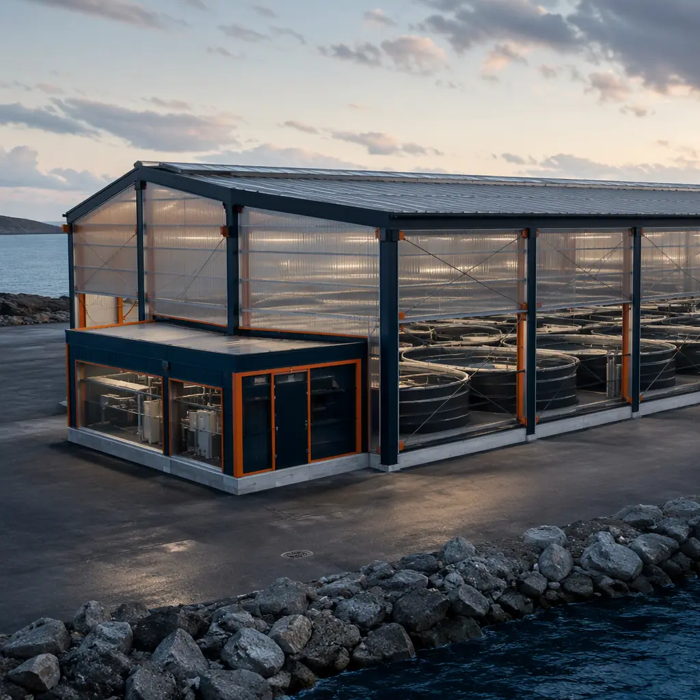
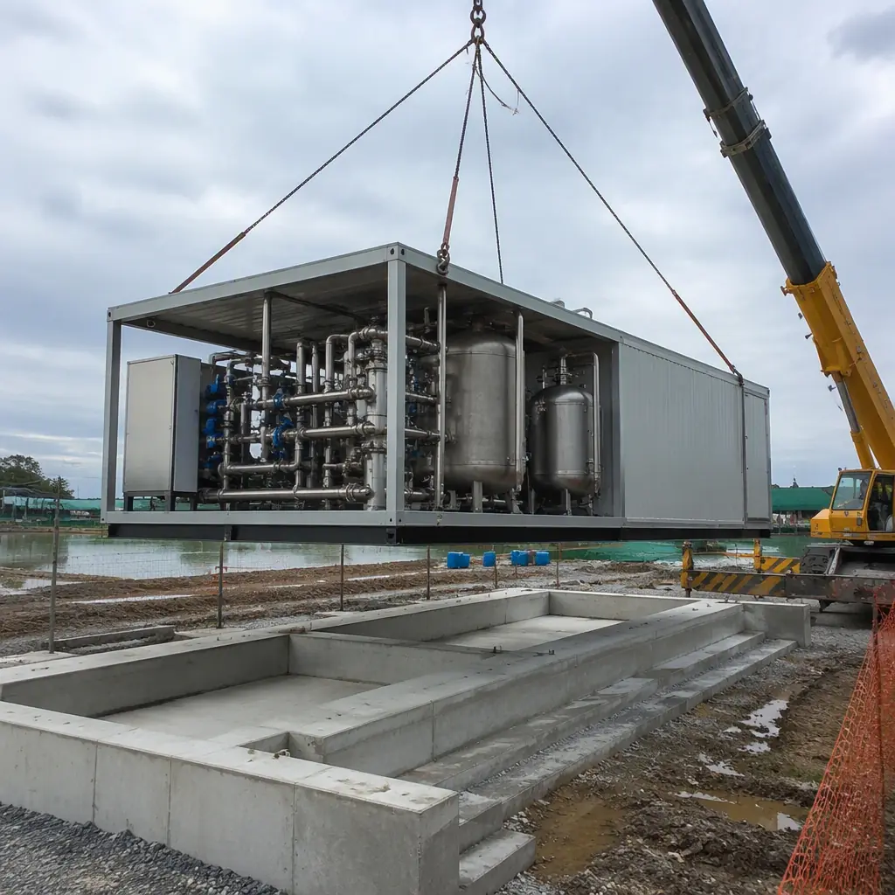
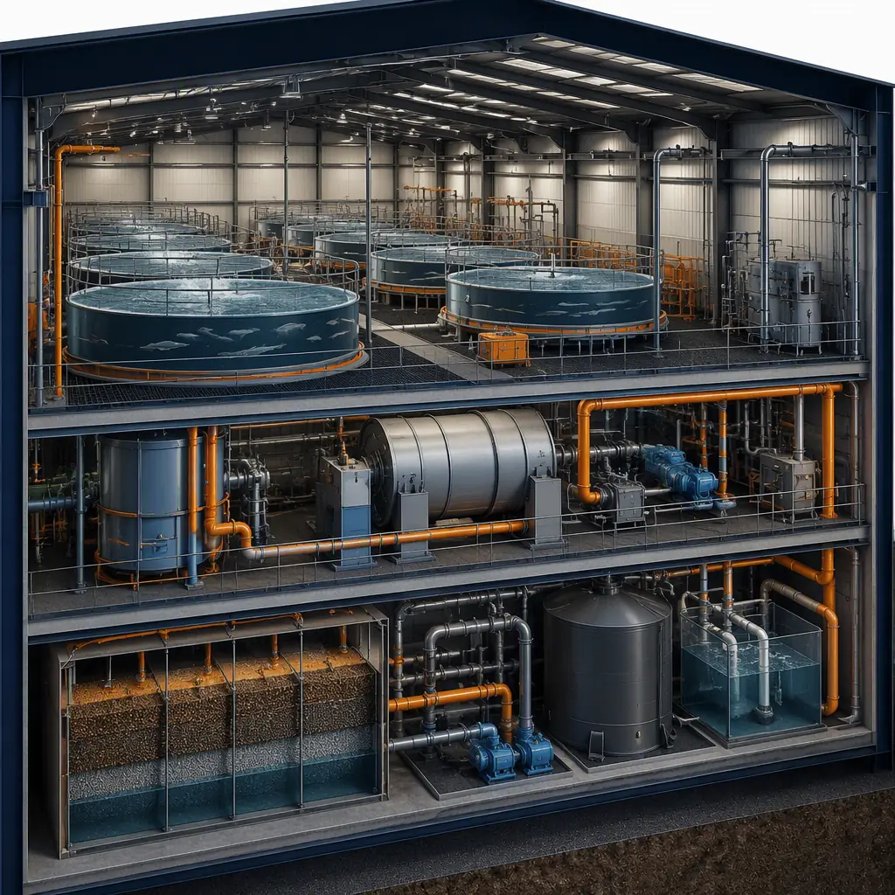
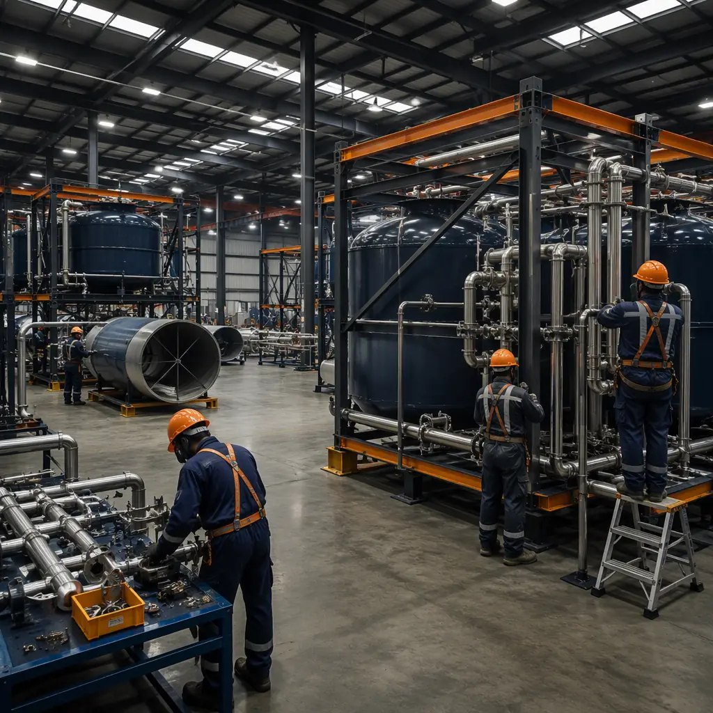

An aquaculture facility is a process plant that happens to be housed in a building: recirculating aquaculture systems (RAS) that reuse 90–99% of their water through drum filters, biofilters, UV sterilizers and oxygenation, biosecurity zones that must physically separate every stage of production, and cold-chain processing that moves from harvest to chill within minutes. A commercial RAS grow-out facility of 30,000–80,000 sq ft conventionally takes 16–30 months to deliver: tank systems and water treatment installed in place, process piping field-fitted, and biosecurity infrastructure improvised around the construction sequence. Modular prefabricated construction restructures the program — hatchery modules, grow-out halls, and water treatment skids are factory-built with tanks, piping, and life-support systems pre-installed and pressure-tested in the plant — compressing the facility to 8–14 months with a 25–35% building cost reduction and, critically, a production-ready plant on day one. The approach extends the process-building logic we document for modular water and wastewater treatment facilities to the aquaculture industry's unique combination of biology, hydraulics, and food safety. This guide covers the aquaculture module package, RAS engineering, biosecurity zoning, cost structure, and procurement path for commercial fish farms, hatcheries, and aquaculture investors.

Why Aquaculture Facilities Are Process Plants, Not Buildings
Aquaculture buildings are defined by the process they house, and that changes every construction decision:
- Water treatment is the critical path. A RAS facility's mechanical heart — drum filters, moving-bed biofilters, UV and ozone systems, oxygen generators, heat exchangers, and the pipework connecting them to every tank — is the longest-lead and highest-risk scope. In conventional delivery it is installed in place over 8–14 months. Modular delivery builds it as skid-mounted, pre-piped, factory-tested modules — the same skid-and-module logic we detail for modular water and wastewater treatment facilities.
- Biosecurity is a zoning problem. Disease outbreaks can wipe out a crop in days, so production facilities separate incoming water, juvenile stock, grow-out, and processing into physically isolated zones with dedicated equipment, drainage, and access protocols. Modular delivery bakes this zoning into the factory design — isolation walls, separate HVAC and plumbing systems are built into the modules, not improvised in the field.
- Corrosion and humidity attack the structure. Fish farming runs at 70–90% relative humidity with salt or brackish water in many operations, and condensation on structure is a leading cause of corrosion, mold, and electrical failure. Steel-frame modules are built with marine-grade coatings, vapor barriers, and humidity-rated insulation in the factory — the envelope discipline we document for modular building envelope systems and modular cold storage construction.
- Live animals impose a hard deadline. Fingerlings arrive on a schedule, and every month of construction delay is a month of lost production and carrying cost. The parallel factory schedule compresses the critical path so the facility is ready for stocking when the biology demands.
RAS vs. Flow-Through vs. Pond-Based — Facility Form Follows the System
The production system dictates the building program, and modular delivery adapts to each:
- Recirculating (RAS) facilities — the fastest-growing segment, favored for salmon, trout, tilapia, and shrimp — are dense, mechanical, and building-intensive: tanks, water treatment, oxygenation, and environmental control inside a climate-controlled hall. RAS is the strongest fit for modular delivery because the entire process is indoors and skid-mountable, and because RAS operators expand in replicable increments — the same controlled-environment logic we document for modular vertical farms and controlled-environment agriculture.
- Flow-through facilities — using natural water flows from rivers or springs — build raceways and tanks alongside water intake and discharge infrastructure. The buildings are simpler, but intake screening, aeration, and treatment still follow the water-handling discipline we cover for modular water treatment facilities.
- Pond-based operations — extensive systems with earthen ponds — need relatively little enclosed space, but modular hatchery, feed storage, and processing buildings bring the same factory-quality benefits to the parts of the operation that are building-intensive.
The Modular Aquaculture Module Package
A modular aquaculture facility divides into functional blocks manufactured, tested, and shipped independently:
Hatchery & Juvenile Rearing Modules
Hatcheries are the most sensitive part of any aquaculture operation — incubation, larval rearing, and juvenile nurseries demand precise water quality, temperature, and lighting with zero tolerance for contamination. Hatchery modules are delivered as factory-built clean environments with tank racks, water conditioning, and alarm systems pre-installed — the precision-environment logic we document for modular laboratory and research facilities, applied to live production. A 5,000–15,000 sq ft hatchery module suite can be craned into place and commissioned in a matter of weeks.
Grow-Out & Water Treatment Buildings
Grow-out halls are clear-span buildings housing multiple tank systems, served by central water treatment modules. Tanks — circular steel or fiberglass, 10–30 ft diameter — are factory-installed on their support frames with piping, aeration, and monitoring pre-connected. The water treatment module is a skid-mounted plant: drum filter, biofilter, UV, oxygenation, and heat exchange pre-piped and pressure-tested at the factory, the same systems-integration discipline we cover for modular MEP systems integration.
Processing, Feed & Support Buildings
Fish processing plants, feed storage, cold rooms, workshops, and staff facilities are delivered as finished modular units — the industrial building logic we document for modular industrial and warehouse construction, with food-grade finishes and the cold-chain systems we cover for modular cold storage construction.

Water Treatment & Life-Support Engineering
The difference between an aquaculture facility that opens and one that produces is the commissioning of its water systems, and modular delivery shifts that commissioning from the field to the factory. Water treatment skids are hydro-tested and run through their control sequences at the plant; tank modules arrive with oxygenation, aeration, and monitoring pre-wired to the facility control system. On site, the commissioning sequence still requires water fill, biofilter maturation, and system stabilization — typically 4–8 weeks — but the building-side critical path is largely complete when the modules arrive, so the biological commissioning runs in parallel with final connections rather than after months of field installation. The testing, balancing, and handover discipline follows our modular building commissioning and handover guide, and the water-quality monitoring infrastructure — dissolved oxygen, pH, temperature, ammonia — connects into the smart-building platform we document for modular smart building technology.
Biosecurity & Disease-Isolation Zoning
Biosecurity is the operational discipline that keeps a facility alive, and it is fundamentally a building-design problem. Modular delivery supports it with factory-built zoning: each production stage — water intake, hatchery, nursery, grow-out, processing — is a physically separate module or module cluster with its own HVAC, drainage, and access, so a pathogen introduced in one zone cannot migrate through shared infrastructure. Decontamination and quarantine modules, foot-bath entry vestibules, and UV-treated air handling are built into the modules rather than added later, and the same standards-driven approach we document for modular laboratories and veterinary and animal facilities scales to production-scale biosecurity. Because modules are factory-built to a documented standard, the biosecurity zoning is repeatable across sites — critical for operators running multi-site production networks.
Cost Structure — Modular vs. Conventional Aquaculture Delivery
| Cost Category | Conventional (50,000 sq ft RAS) | Modular (50,000 sq ft RAS) |
|---|---|---|
| Buildings & structure | $8–14M | $6–10M (factory-built) |
| Water treatment & life-support systems | $6–10M | $4.5–7.5M (skid modules) |
| Tanks, piping & process installation | $4–7M | $3–5M (factory-installed) |
| Field labor, weather risk & schedule overhead | $3–5.5M | $1–2M |
| Total Facility | $21–36.5M | $14.5–24.5M |
The 25–30% capital reduction compounds with 6–12 months of earlier first harvest — significant for a business where revenue starts only when fish come to market. For the full economics of modular project delivery, see our 2026 modular cost guide and our developer's ROI analysis.

Processing & Cold Chain
The building program does not end at harvest: fish processing plants, ice and cold storage, and dispatch facilities are the final link in the value chain, and they are among the most building-intensive parts of an aquaculture operation. Modular processing plants are delivered with food-grade stainless steel finishes, washdown-capable floors, and the zoning required for HACCP compliance, and the cold chain from harvest to dispatch follows the temperature-controlled building logic we document for modular cold storage construction. Because processing and cold rooms are factory-built and pre-commissioned, the harvest-to-market chain is ready on day one of operation rather than months after the tanks are stocked — the commissioning and handover discipline we cover in our commissioning guide.
Site & Utility Considerations
Aquaculture facilities are anchored to water and power in ways that shape site selection and building design. Modular delivery minimizes the site critical path: foundations and utility connections — water supply, power, drainage — are prepared while modules are in production, then the facility is assembled in a crane campaign. Energy is a major operating cost — aeration and oxygen generation can account for 20–40% of operating expenditure — so power resilience is a design driver: generator-ready connections and redundant pumping follow the uptime engineering we document for modular data center construction, where continuous operation governs the business model just as it governs fish health here. Water rights, discharge permitting, and environmental review are typically the longest-lead non-building items, and the permitting and zoning path is covered in our modular construction permitting and zoning guide.
Phased Expansion & Multi-Site Replication
Aquaculture businesses grow by adding production capacity — more tanks, more modules, more sites — and modular delivery is built for that pattern. A RAS facility can phase its build-out: hatchery and first grow-out hall first, then additional halls as markets develop, each factory-built while the existing facility produces — the phasing logic we document for modular additions and expansions. Multi-site operators replicate the same module package across locations, standardizing biosecurity, operations, and maintenance — the repeatable-project economics we cover for modular construction scheduling and the factory quality control described in modular factory QC systems. For projects financed by aquaculture funds and agricultural lenders, the funding and procurement structure is covered in our modular construction lending guide and our RFP procurement guide.

Is Modular Right for Your Aquaculture Project?
Modular aquaculture delivery delivers the strongest value for RAS hatcheries and grow-out facilities (10,000–100,000 sq ft) where the water treatment system is the critical path; for operators expanding capacity while existing facilities stay in production; for multi-site producers standardizing on a replicable module package; and for new entrants bringing a facility online against a fixed financing and stocking schedule. For flow-through and pond-based operations, modular hatchery, feed, and processing buildings capture most of the benefit even where the production system itself is outdoor. In every case, the factory-built water treatment, biosecurity zoning, and cold-chain infrastructure delivers a production-ready facility months earlier — and with the process engineering already proven in the plant.